온실가스관리기사 (2018-09-15 기출문제)
1과목: 기후변화개론
1. 기후변화에 관한 정부간 협의체(IPCC)에 대한 설명으로 옳지 않은 것은?
- 일간의 활동이 기후변화에 미치는 영향을 평가하고 국제적인 대책을 마련하고자 세계기상기구(WMO)와 유엔환경계획(UNEP)이 공동으로 설립하였다.
- IPCC 보고서는 과학, 영향 및 적응, 완화, 종합보고서 등으로 구성된다.
- 3차 보고서는 각국 리더들에게 Bail Action Plan 동의를 위한 근거를 제공하고 새로운 기후변화 시나리오 작성 및 해수면 상승과 탄소순환 및 기후현상의 보강을 주요 골자로 한다.
- 본보는 제네바에 있으며 2007년에 노벨평화상을 수여했다.
(정답률: 54%)

2. 지구온난화지수의 크기별 대소 관계로 옳게 배열된 것은?
- CO2＜CH4＜N2O
- CH4＜CO2＜N2O
- N2O＜CO2＜CH4
- CO2＜N2O＜CH4
(정답률: 84%)
3. 지구온도 변화를 나타내는 척도와 가장 거리가 먼 것은?
- 해수면 변화, 해양 온도
- 강수 온도, 건축물 온도 측정
- 빙하, 해빙
- 위성 온도 측정, 기후 대리변수
(정답률: 84%)
4. 부문별 관장기관이 생성한 국가 온실가스 배출통계를 최종확정하기까지의 절차를 순서대로 옳게 나열한 것은?
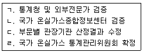
- ㄴ→ㄱ→ㄷ→ㄹ
- ㄴ→ㄷ→ㄹ→ㄱ
- ㄴ→ㄹ→ㄷ→ㄱ
- ㄱ→ㄴ→ㄹ→ㄷ
(정답률: 77%)
5. 기후변화가 우리나라 각 부문별로 미칠 것으로 예상되는 영향으로 가장 거리가 먼 것은?
- 생태계 부문에서는 남해안 식생이 아열대로 변화
- 생태계 부문에서는 쌀 수량이 남부와 중부에서는 감소하는 반면, 북부지역에서는 증가
- 생태계 부문에서는 서해안에서 냉수성 어종이 증가
- 농ㆍ축산 부문에서는 맥류의 안전재배지대 북상 및 수량 증가
(정답률: 90%)
6. Kyoto Flexible Mechanism(Kyoto Protocol)의 3가지 구조에 포함되지 않은 것은?
- Emissionns Trading
- Sustainable Development
- Clean Devlopment Mechanism
- Joint lmplementation
(정답률: 80%)
7. 미래 기후변화의 영향에 관한 설명으로 가장 거리가 먼 것은?
- 난대성 상록 활엽수인 후박나무는 북부지역으로 확대된다.
- 꽃매미, 열대모기 등 북방계 외래곤충이 감소하고 고온으로 인해 병해충 발생가능성이 감소된다.
- 농업에 있어서는 생산성 감소의 위협과 신 영농기법 도입의 기화가 공존한다.
- 산업전반에서는 산업리스크 증가와 새로운 시장 창출 기회가 공존한다.
(정답률: 91%)
8. 신기후변화체제(Post-2020)에 대응하기 위해 우리나라가 UN에 제출한 국가별 기여방안(INDC)에서 온실가스 감축목표는 2030년까지 BAU 대비 몇 %인가?
- 15%
- 30%
- 37%
- 50%
(정답률: 84%)
9. 우리나라 기상청의 지구대기감시관측망 중 기본관측소에 해당하지 않는 곳은?
- 안면도
- 고산(제주)
- 목포
- 울릉도독도
(정답률: 90%)
10. 기후변화협약 당사국총회의 주요 결과와 거리가 먼 것은?
- 교통서 교토의정서를 채택하였다.
- 더반에서 교토의 정서 제2차 공약기간 설정에 합의하였다.
- 코펜하겐에서 개도국의 능동적이고 자발적 감축행동을 취하기로 하는 행동계획을 채택하였다.
- 나이로비에서 개도국의 기후변화적응지원에 관한 5개년 행동계획을 채택하였다.
(정답률: 73%)
11. CO2=1로 볼 때, 다음 중 지구온난화지수(GWP)가 가장 큰 온실가스는? (단, GWP는 IPCC 2차 평가보고서의 지속기간 100년 기준)
- HFC-23
- HFC-125
- PFC-14
- HFC-245ca
(정답률: 54%)
12. 다음 중 교토의정서의 Annex Ⅰ 온실가스 의무 감축국이 아닌 나라는?
- 영국
- 일본
- 호주
- 한국
(정답률: 90%)
13. 기후변화 시나리오 예측을 위한 기후모델에 관한 성명으로 옳지 않은 것은?
- 지구의 기후시스템은 대기권, 수권, 빙권, 지권 및 생물권으로 구성된다.
- 구성요소들 간의 물리과정, 상호작용, 에너지, 물 및 물질순환을 이룬다.
- 기후과정 외에 인위적인 영향은 배제된다.
- 기후시스템은 비선형성에 의한 카오스적인 행동을 보일 것으로 알려져 왔다.
(정답률: 85%)
14. 청정개발체제사업에서 배출권의 투명성과 신뢰성 있는 관리를 위하여 구성하고 운영하는 기구와 거리가 먼 것은?
- 적응기금(Adaptation Fund)
- 운영기구(Designates Operation Entity)
- 집행이사회(Executive Board)
- 국가승인기구(Designated National Authority)
(정답률: 86%)
15. 유엔기후변화협약(UNFCCC)에 관한 설명으로 가장 거리가 먼 것은?
- 1992년 브라질 리우데자네이루에서 개최된 유엔환경개발회의에서 채택되었으며, 선진국과 개도국이 “공통의 그러나 차별화된 책임”에 따라 온실가스를 감축할 것을 합의하였다.
- 주요기구로서 당사국총회는 협약의 최고결정기구이다.
- 당사국총회에는 협약의 이행 및 과학ㆍ기술적 검토를 위해 이행부속기구(SBI)와 과학기술자문부속기구(SBSTA)를 두고 있다.
- 협약은 각국의 온실가스 감축목표를 달성을 위하여 개도국의 특수상황에 대한 고려없이 강력한 국제법적 구속력을 가진다.
(정답률: 80%)
16. 미래 기후변화가 한반도의 수자원에 미칠 것으로 예상되는 영향과 전망에 관한 설명으로 가장 거리가 먼 것은?
- 지표 유출량 증가
- 지하수 함양량 증가
- 홍수 발생 증가
- 봄철, 겨울철 가뭄 증가
(정답률: 94%)
17. 기후변화의 자연적인 원인과 관련된 내용으로 가장 거리가 먼 것은?
- 태양 흑점수의 변화
- 밀란코비치의 효과
- 지구의 공전궤도 효과
- 토지의 이용
(정답률: 78%)
18. 다음의 탄소배출권 거래에 관한 내용으로 옳지 않은 것은?
- 탄소배출권 거래는 교토메커니즘에 제시된 감축 수단 중 하나이다.
- 배출권거래제는 온실가스 에너지 목표관리제에 비해 상대적으로 시장 기반의 효율적 정책으로 평가 받는다.
- 칸쿤 합의문에 따라 RNU, ERU, CER과 같은 배출권은 일정 비율 이월이 가능하다.
- 배출권거래제도 중 CCX는 미국에서 자발적으로 시행되었다.
(정답률: 57%)
19. SLCP(Short Lived Climate Pollutants) 중 다음과 같은 특성을 가진 물질로 가장 적합한 것은?
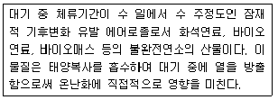
- HFCs
- 메탄
- 대류권 오존
- 블랙카본
(정답률: 62%)
20. 기후변화 관련 국제기구 중 UN조직 내 환경활동을 촉진ㆍ조정ㆍ활성화하기 위해 설립된 환경전담 국제정부간 기구로 환경문제에 대한 국제적 협력을 도모하기 위한 것은?
- WCRP
- UNIDO
- UNDP
- UNEP
(정답률: 82%)
2과목: 온실가스 배출의 이해
21. 온실가스ㆍ에너지 목표관리 운영 등에 관한 지침상 석회의 생산 동안 생성되어, 배출량 산정 시 고려되어야 할 소성시설의 부산물은?
- CKD
- LKD
- Cullet
- Limestons
(정답률: 58%)
22. 온실가스ㆍ에너지 목표관리 운영 등에 관한 지침상 석유화학제품 생산공정의 보고대상 배출활동에 포함되지 않는 것은?
- 메탄올 반응시설
- 암모니아 반응시설
- 에틸렌 옥사이드 반응시설
- 아크릴로니트릴 반응시설
(정답률: 70%)
23. 온실가스ㆍ에너지 목표관리 운영 등에 관한 지침상 전자산업에서 화확기상증착시설(CVD)의 공정배출로 배출되는 온실가스의 종류로 거리가 먼 것은?
- CF4
- CH4
- CHF3
- C3F8
(정답률: 68%)
24. 온실가스ㆍ에너지 목표관리 운영 등에 관한 지침상 마그네슘 생산공정 중 “주조 공정”에서 발생할 수 있는 보고 대상 온실가스의 조합으로 가장 적합한 것은?
- CO2
- CO2, PFCs,
- CO2, PFCs, HFCs
- PFCs, HFCs, SF6
(정답률: 50%)
25. 고정연소(고체연료) 보고대상 배출시설의 종류에 해당하지 않는 것은? (단, 온실가스ㆍ에너지 목표관리 운영 등에 관한 지침 기준)
- 위락시설
- 화력발전시설
- 발전용 내연기관
- 공정연소시설
(정답률: 68%)
26. 고형 폐기물 매립시설 중 침출수가 매립시설에서 흘러 나가는 것을 방지하기 위해 매립시설의 바닥과 측면을 폐기물의 성질ㆍ상태, 매립높이, 지형조건 등을 고려하여 점토류 라이너 및 토목합성수지 라이너 등의 재질로 이루어진 차수시설을 설치ㆍ운영하는 것은?
- 차단형 매립시설
- 관리형 매립시설
- 저류형 매립시설
- 차수형 매립시설
(정답률: 61%)
27. 온실가스ㆍ에너지 목표관리 운영 등에 관한 지침상 철도 부문 보고대상 배출시설을 <보기>에서 모두 선택한 것은?
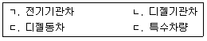
- ㄱ
- ㄱ, ㄴ
- ㄱ, ㄴ, ㄷ
- ㄱ, ㄴ, ㄷ, ㄹ
(정답률: 68%)
28. 혐기성 소화조의 소화효율 저하 원인과 가장 거리가 먼 것은?
- pH 저하
- 알칼리제 주입
- 소화조내 온도 저하
- 독성물질 유입
(정답률: 72%)
29. 온실가스ㆍ에너지 목표관리 운영 등에 관한 지침상 이동연소(항공) 배출시설에서 온실가스 배출량에 영향을 주는 인자들과 가장 거리가 먼 것은?
- 항공기 비행단계별 운항시간
- 항공기 연료 종류
- 항공기 비행 거리
- 항공기 이착륙시의 온도
(정답률: 83%)
30. 아연생산 배출시설 중 광석이 융해되지 않을 정도의 온도에서 광석과 산소, 수증기, 탄소, 염화물 또는 염소 등을 상호작용 시켜서 다음 제련조작에서 처리하기 쉬운 화합물로 변화시키거나 어떤 성분을 기화시켜 제거하는데 사용되는 로는? (단, 온실가스ㆍ에너지 목표관리 운영 등에 관한 지침 기준)
- 용융로
- 전해로
- 용해로
- 배소로
(정답률: 61%)
31. 다음은 온실가스ㆍ에너지 목표관리 운영 등에 관한 지침상 촉매를 활용한 수증기 개질방법으로 암모니아를 생산하는 7단계 공정이다. 공정순서로 가장 적합한 것은?
- 천연가스탈황→수증기 1차 개질→일산화탄소의 전환→공기로 2차 개질→이산화탄소 제거→메탄화→암모니아 합성
- 천연가스탈활→수증기 1차 개질→공기로 2차 개질→이산화탄소 제거→메탄화→일산화탄소의 전환→암모니아 합성
- 천연가스탈황→수증기 1차 개질→공기로 2차 개질→일산화탄소의 전환→이산화탄소 제거→메탄화→암모니아 합성
- 천연가스탈황→수증기 1차 개질→이산화탄소 제거→일산화탄소의 전환→공기로 2차 개질→메탄화→암모니아 합성
(정답률: 72%)
32. 온실가스ㆍ에너지 목표관리 운영 등에 관한 지침상 납생산의 배출활동 개요에 관한 설명으로 옳지 않은 것은?
- 연정광으로부터 미가공 조연(Bullion)을 생산하는 1차 생산 공정은 2가지로 구분되는데, 이 중 소결과 제련과정을 연속적으로 거치는 소결/제련 공정은 전체 1차 납 생산 공정의 약 99%를 차지한다.
- 소결/재련 공정에서 소결 공정은 연정광을 재활용 소결물, 석회석과 실리카, 산소, 납 고함유 슬러지 등과 혼합하여 황과 휘발성 금속을 연소를 통해 제거한다.
- 소결/재련 공정에서 제련 공정은 일반적인 고로 또는 ISF(Imperial Smelting Furmace)를 이용하고 납산화물의 환원과정에서 CO2가 배출된다.
- 직접제련 공정에서는 소결공정이 생략되고 여정광과 다른 물질들이 직접 로에 투입되어 용융되고 산화되며, 다양한 종류의 로가 직접 제련 공정에 이용된다.
(정답률: 40%)
33. 다음은 온실가스ㆍ에너지 목표관리 운영 등에 관한 지침상 철강 생산 공정의 보고대상 배출시설 중 어떤 시설에 관한 설명인가?
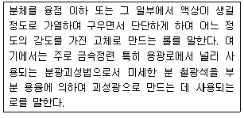
- 코크스로
- 소결로
- 용선로
- 전로
(정답률: 49%)
34. 온실가스ㆍ에너지 목표관리 운영 등에 관한 지침상 고형폐기물의 생물학적 처리와 관련한 배출시설에 해당하지 않는 것은?
- 사료화 시설
- 분뇨처리시설
- 퇴비화시설
- 부숙토 생산시설
(정답률: 54%)
35. 온실가스ㆍ에너지 목표관리 운영 등에 관한 지침상 아동연소(도로) 부분의 보고대상 배출시설 중 “소형 화물자동차” 기준에 해당하는 것은?
- 배기량이 1000cc 미만으로서 길이 3.6m, 길이 1.6m, 높이 2.0 이하인 것
- 최대적재량이 0.8톤 이하인 것으로서, 총중량이 5톤 이하인 것
- 최대적재량이 1톤 이하인 것으로서, 총중량이 3.5톤 이하인 것
- 최대적재량이 3톤 이하인 것으로서, 총중량이 5톤 이하인 것
(정답률: 75%)
36. 온실가스ㆍ에너지 목표관리 운영 등에 관한 지침상 각 연료에 관한 설명으로 옳지 않은 것은?
- 바이오가솔린(Biogasoline) : 해조류와 같은 바이오매스를 사용하여 생산하는 가솔린으로 분자당 6~12의 탄소를 포함하며, 바이오부탄올이 알콜기인 것에 반해 바이오가솔린은 탄화수소로서 화학적으로 차이가 난다.
- 바이오디젤(Biodiesel) : 쌀겨 기름이나 연료로서, 기존의 경유와 특성이 비슷하지만, 연소시 공해가 거의 발생하지 않는 특징이 있다.
- 콜타르(Coal Tar) : 석탄을 건류ㆍ연소할 때 석탄입자가 연화 용융하여 서로 점결하는 성질이 있는 석탄을 말하며, 건류용탄ㆍ원료탄이라고도 한다.
- 슬러지 가스(Sludgs gas) : 오수 및 동물성 현탄액(slurries)으로부터 바이오매스 및 고체 폐기물 혐기성 발효(anaerobic fermentation)로부터 발생하는 가스를 말하며, 회수되어 열 및 전력을 생산하는데 사용된다.)
(정답률: 57%)
37. 제품 등의 생산공정에 사용되는 특정시설에 열을 제공하거나 장치로부터 멀리 떨어져 이용하기 위해 연료를 의도적으로 연소시키는 시설은? (단, 온실가스ㆍ에너지 목표관리 운영 등에 관한 지침 기준)
- 공정배출시설
- 대기오염물질 방지시설
- 스팀사용시설
- 공정연소시설
(정답률: 67%)
38. 온실가스ㆍ에너지 목표관리 운영 등에 관한 지침상 N2O를 산정하지 않는 처리시설은?
- 하수처리시설
- 폐수처리시설
- 혐기성 분해시설
- 폐가스 소각시설
(정답률: 46%)
39. 시멘트 생산 공정 중 다량의 온실가스를 발생하는 시설(공정)로 가장 적합한 것은? (단, 온실가스ㆍ에너지 목표관리 운영 등에 관한 지침 기준)
- 가스회수시설
- 소성시설
- 접촉 개질시설
- 세척시설
(정답률: 67%)
40. 온실가스ㆍ에너지 목표관리 운영 등에 관한 지침상 전자산업의 온실가스 주요배출시설에 대한 설명으로 거리가 먼 것은?
- 증착시설 - 반도체 공정에 주로 이용되는 화확기상증착법은 기체, 액체 혹은 고체상태의 원료화합물을 반응기 내에 공급하여 기판 표면에서의 화학적 반응을 유도함으로써 반도체 기반위에 고체 반응생성물인 박막층을 형성하는 공정이다.
- 식각시설 - 산이나 알칼리용액이 아닌 중성용액으로 제품의 표면처리를 위해 원료나 제품을 중화시키는 시설이다.
- 식각시설 - 전자산업에서의 화학약품을 사용하여 금속표면을 부분적 또는 전면적으로 용해제거하는 시설이다.
- 증착시설 - CVD법에 의한 화학반응의 종류로는 이종반응이 대표적인데, 이것은 반응이 기판표면에서 일어나 양질의 박막을 얻기 위한 필수적인 반응이다.
(정답률: 69%)
3과목: 온실가스 산정과 데이터 품질관리
41. 온실가스ㆍ에너지 목표관리 운영 등에 관한 지침에서 고정연소시설에서의 CO2 배출량 산정시 Tier 2의 ㉠ 액체연료 산화계수와 ㉡ 기체연료 산화계수로 옳은 것은?
- ㉠0.99 ㉡0.995
- ㉠1.0 ㉡0.99
- ㉠0.995 ㉡1.0
- ㉠0.98 ㉡0.99
(정답률: 63%)
42. 건물업종 관리업체 A에서 1년 간 도시가스(LNG) 58.970Nm3을 사용했을 때 온실가스 배출량은? (단, 발열량과 배출계수는 아래 표 참조, 산화계수는 1.0을 적용)
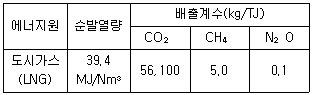
- 83.19tCO2-eq
- 96.24tCO2-eq
- 113.44tCO2-eq
- 130.66tCO2-eq
(정답률: 64%)
43. 온실가스 배출권 거래제 운영을 위한 검증지침상 온실가스 배출량 검증과 관련된 다음 설명으로 옳지 않은 것은?
- 피검증자의 임직원으로 근무한 자는 근무를 종료한 날로부터 2년이 경과하지 않았을 경우 해당 검증대상의 검증을 위한 검증팀에 참여할 수 없다.
- 온실가스 배출량 검증에 따른 최종의견은 적정, 부적정의 두 가지 중 하나로 하여야 한다.
- 검증팀에는 검증대상이 속하는 분야에 대한 자격을 갖춘 검증심사원이 1인 이상 포함되어야 한다.
- 내부심의팀은 1인 이상의 소속 검증심사원으로 구성한다.
(정답률: 58%)
44. 온실가스ㆍ에너지 목표관리 운영 등에 관한 지침상 산정등급(Tier)과 배출계수 적용에 관한 설명으로 가장 거리가 먼 것은?
- Tier 1 - IPCC 기본 배출계수 활용
- Tier 2 - 국가고유 배출계수 활용
- Tier 3 - 사업장ㆍ배출시설별 배출계수 사용
- Tier 4 - 전 세계 공통의 배출계수 사용
(정답률: 82%)
45. 온실가스ㆍ에너지 목표관리 운영 등에 관한 지침상 관리업체인 A사는 별도 법인 H사로부터 구매한 원료 산화칼슘(CaO) 1000톤을 사용하여 칼슘카바이드(CaC2) 1100톤을 생산하였다. 칼슘카바이드 생산에 의한 A사의 공정 배출량을 산정하면 몇 tCO2eq 인가? (단, CaC2생산 배출계수 : 1.70 tCO2/tCO, CaO 소성 활동 배출계수 : 10 tCO2/tCaO)
- 1700
- 11700
- 1870
- 11870
(정답률: 32%)
46. 다음은 온실가스 배출거래제 운영을 위한 검증지침에서 온실가스 배출량 등의 검증절차이다. ()안에 가장 적합한 것은?
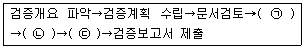
- ㉠내부검증 ㉡시정조치요구 및 확인 ㉢외부검증
- ㉠현장검증 ㉡검증결과 정리 및 평가 ㉢내부심의
- ㉠시정조치요구 및 확인 ㉡내부검증 ㉢현장검증
- ㉠현장검증 ㉡외부심의 ㉢검증결과 정리 및 평가
(정답률: 59%)
47. 도시가스(LNG)의 사용량의 측정값이 1기압, 15℃에서 1000m3이다. 1기압, 0℃로 온도보정을 실시한 결과로 가장 가까운 값은?(오류 신고가 접수된 문제입니다. 반드시 정답과 해설을 확인하시기 바랍니다.)
- 1⑤49m3
- 8500m3
- 9479m3
- 9985m3
(정답률: 64%)
48. 온실가스ㆍ에너지 목표관리 운영 등에 관한 지침상 온실가스 배출량 산정을 위한 품질관리(QC)활동 목적과 거리가 먼 것은?
- 온실가스 배출량 보고와 관련한 고유 위험, 통제 위험 및 오류ㆍ누락사항에 대한 적시 방지
- 자료의 무결성, 정확성 및 완전성을 보장학 위한 일상적이고 일관적인 검사의 제공
- 오류 및 누락의 확인 및 설명
- 배출량 산정자료의 문서화 및 보관, 모든 품질관리 활동의 기록
(정답률: 41%)
49. 온실가스ㆍ에너지 목표관리 운영 등에 관한 지침에 따른 배출량 등의 산정ㆍ보고 체계 등에 대한 설명으로 거리가 먼 것은?
- 조직경계는 건축법 등 관련법률에 따라 정부에 허가받거나 신고한 문서 등을 이용하여 사업장의 부지경계를 식별한다.
- 보고대상 배출활동의 파악 시 활용가능한 자료로는 공정의 설계자료, 설비의 목록, 연료등의 구매전표 등이다.
- 배출량 등의 제3차 검증은 기획재정부 장관이 온실가스정보센터의 장과 협의를 거쳐 지정ㆍ고시한 검증기관을 활용하여 제3자 검증을 실시한다.
- 관리업체는 검증기관에 제출하여야 한다.
(정답률: 57%)
50. 다음은 온실가스ㆍ에너지 목표관리 운영 등에 관한 지침에 근거하여 이동연소(도로)에서 Tier 3 산정방법론을 적용하여 CH4 및 N2O 배출량 산정시 요구되는 활동자료에 관한 설명이다. ()안에 가장 적합한 것은?
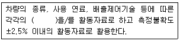
- 주행거리
- 연료소비량
- 운행횟수
- 차량대수
(정답률: 59%)
51. 온실가스ㆍ에너지 목표관리 운영 등에 관한 지침상 이동연소(철도)에 대한 배출량 산정으로 옳지 않은 것은?
- Tier 1 산정방법론은 연료 종류별 사용량을 활동자료로 하고 기본 배출계수를 이용하여 배출량을 산정하는 방법이다.
- Tier 2 산정방법론은 기관차 종류, 연료 중류, 엔진 종류에 따른 연료 사용량을 활동자료로 하고 국가 고유배출계수를 하용하여 배출량을 산정하는 방법이다.
- CO2와 N2O는 Tier 3 산정 방법론까지 제공한다.
- Tier 3 산정방법론에서 보다 정확한 배출량 산정을 위해서는 기관차의 종류, 엔진 종류, 부하율 등 다양한 인자를 고려해야 한다.
(정답률: 57%)
52. 온실가스ㆍ에너지 목표관리 운영 등에 관한 지침상 건물이 건축물 대장 또는 등기부등에 각각 등재되어 있거나 수유지분을 달리하고 있는 경우의 조직경계 설정에 대한 설명 중 옳지 않은 것은?
- 연접한 대지에 동일 법인이 여러 건물을 소유한 경우에는 한 건물로 본다.
- 에너지관리의 연계성이 있는 복수의 건물 등은 한 건물로 본다.
- 연접한 집한건물이 동일한 조직에 의해 에너지공급ㆍ관리를 받는 경우에도 한 건물로 간주한다.
- 건물의 소유구분이 지분형식으로 되어 있을 경우에는 보유지분에 따라 경계를 분발한다.
(정답률: 69%)
53. 이산화탄소에 대한 온실가스의 복사 강제력을 비교하기 위하여, 해당 온실가스의 양에 지구온난화지수를 곱하여 산출한 값의 적절한 것은?
- ton C
- TOE
- ton CO2
- ton CO2 eq
(정답률: 79%)
54. 온실가스ㆍ에너지 목표관리 운영 등에 관한 지침상 화학산업 온실가스 배출활동에 해당 하지 않는 것은?
- 질산 생성
- 카바이드 생산
- 소다회 생산
- 석회 생산
(정답률: 45%)
55. 온실가스ㆍ에너지 목표관리 운영 등에 관한 지침상 ODS 대체물질 사용 분야 온실가스 배출량 산정시 Tier 1 산정방법론에서 비에어로졸 용매 부문과 에어로졸 부문의 차이를 설명한 것으로 가장 적합한 것은?
- 에어로졸 부문은 1차 년도 기본 배출계수를 10%로 한다.
- 비에어로졸 용매 부문은 제품을 사용하기 시작한 후 5년 내에 서서히 배출되는 것으로 간주한다.
- 에어로졸 부문은 회수나 재활용, 파기 등을 고려하지 않는다.
- 에어로졸 비에어로졸 부문에서 보고되는 항목은 관리업체의 온실가스 총 배출량에 합산한다.
(정답률: 55%)
56. 온실가스ㆍ에너지 목표관리 운영 등에 관한 지침상 모니터링 유형 C(근사법에 따른 모니터링)를 적용할 수 있는 경우와 거리가 먼 것은?
- 식당 LPG, 비상발전기, 소방펌프 및 소방설비 등 저배출원
- 이동연소배출원(사업장에서 개별 차량별로 온실가스 배출량을 산정하는 경우를 의미한다.)
- 정도검사를 실시하는 내부 측정기기를 이용하는 사업장
- 타 사업장 또는 법인과의 수급계약서에 명시된 근거를 이용하여 활동자료를 배출시설별로 구분하는 경우
(정답률: 41%)
57. 온실가스 배출권 거래제 운영을 위한 검증지침에서 리스크 분석에 관한 설명 중 옳지 않은 것은?
- 검증팀은 피검증자에 의해 발생하는 리스크를 평가한다.
- 피검증자에 의해 발생하는 리스크에는 고유리스크와 통제리스크가 있다.
- 검증팀의 검증과정에서 검출리스크가 발생한다.
- 통제리스크는 검증대상의 업종 특성에 따른 리스크이다.
(정답률: 47%)
58. 온실가스ㆍ에너지 목표관리 운영 등에 관한 지침상 온실가스 측정 불확도 산정정차를 바르게 나열한 것은?
- 사전검토→불확도 산정→합성 불확도 산정→배출량 불확도 계산
- 사전검토→합성 불확도 산정→배출량 불확도 계산→불확도 산정
- 사전검토→배출량 불확도 계산→불확도 산정→합성 불확도 산정
- 사전검토→불확도 산정→배출량 불확도 계산→합성 불확도 산정
(정답률: 46%)
59. 온실가스ㆍ에너지 목표관리 운영 등에 관한 지침상 다음 설명하는 불확도는 무엇인가?
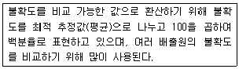
- 표준불확도
- 확장불확도
- 상대불확도
- 합성불확도
(정답률: 72%)
60. 온실가스ㆍ에너지 목표관리 운영 등에 관한 지침상 관리업체에서 알칼리 폐수 중화용으로 액체 CO2를 연간 100톤 구매해서 전량 사용하였다. 이 활동으로 인해 관리업체가 온실가스 총 배출량에 합산 보고해야 할 온실가스 배출량은? (단, 액체 CO2 순도는 99.9%)
- 100 ton CO2
- 99.9 ton CO2
- 50 ton CO2
- 0 ton CO2
(정답률: 35%)
4과목: 온실가스 감축관리
61. 다음 온실가스 감축 방법 중 직접 감축방법에 해당되지 않는 것은?
- 대체물질 개발
- 공정 개선
- 온실가스 활용
- 탄소배출권 차입
(정답률: 62%)
62. 광물산업의 시멘트 생산 관련 소성로(Kiln)에서 온실 가스 배출감축을 위한 공정개선 사항과 가장 거리가 먼 것은?
- 최적화된 킬른의 “길이 : 직경” 비율
- 킬른 내에서의 기체 누출 감소
- 부원료에 석고사용량 증가
- 동일하고 안정적인 운전조건
(정답률: 49%)
63. 프로젝트 활동에 적합한 베이스라인(Baseline)방법론을 선정할 때 따라야 하는 접근법으로 가장 거리가 먼 것은?
- 현재의 실제 온실가스 배출
- 과거의 온실가스 배출
- 경제성 측면에서 가장 유리한 기술을 적용할 때의 온실가스 배출
- 이전 유사한 프로젝트의 최소 배출량
(정답률: 33%)
64. 수소력발전에 관한 내용으로 가장 거리가 먼 것은?
- 초기 투자비가 낮고 투자 회수 기간이 짧다.
- 반영구적인 에너지 자원으로 에너지 안전 측면에서 우수하다.
- 전력생산 시간이 짧아 전력공급량 조정 기능이 탁월하다.
- 에너지 변환 효율이 높다.
(정답률: 68%)
65. 다음은 온실가스ㆍ에너지 목표관리 운영 등에 관한 지침상 목표설정의 기준 및 절차에 관한 설명이다. ()안에 가장 적합한 것은?
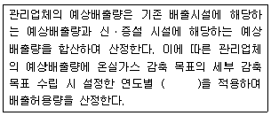
- 예비율
- 감축률
- 증가율
- 소비율
(정답률: 64%)
66. 외부사업 타당성 평가 및 감축량 인증에 관한 지침상 외부사업 방법론의 제안서에 포함되어야 할 내용으로 가장 거리가 먼 것은? (단, 기타의 사항 등은 제외한다.)
- 방법론 일반사항 및 용어정리
- 베이스라인 방법론
- 계획산정 방법론
- 모니터링 방법론
(정답률: 18%)
67. 조직의 감축수단의 선택과 목표 달성을 위한 시나리오가 선택되었을 때 이행계획을 구체화 해야 할 필요가 있는데, 이 때 반드시 고려해야 할 사항과 거리가 먼 것은?
- 감축수단 적용에 따른 조직 내 에너지 및 온실가스 저감의 중복성, 종속성 및 독립성을 고려
- 감축수단의 효과가 발생하는 시기를 고려
- 예산확보에 대한 계획을 수립
- 감축수단 적용에 따른 세부제품생산량 및 매출액 증대계획을 수립
(정답률: 58%)
68. 다음 중 소규모 CDM 사업의 기준으로 가장 적합한 것은?
- 에너지 공급/수요 측면에서의 에너지 소비량을 최대 연간 30GWh(또는 상당분) 저감하는 에너지 절약 사업
- 에너지 공급/수요 측면에서의 에너지 소비량을 최대 연간 40GWh(또는 상당분) 저감하는 에너지 절약 사업
- 에너지 공급/수요 측면에서의 에너지 소비량을 최대 연간 50GWh(또는 상당분) 저감하는 에너지 절약 사업
- 에너지 공급/수요 측면에서의 에너지 소비량을 최대 연간 60GWh(또는 상당분) 저감하는 에너지 절약 사업
(정답률: 54%)
69. BAU(Business As Usual)에 대한 내용으로 옳은 것은?
- 온실가스 배출량 실적치
- 온실가스 감축 후 배출량 규모
- 온실가스 감축정책 수준
- 온실가스 배출전망치
(정답률: 53%)
70. 온실가스ㆍ에너지 목표관리 운영 등에 관한 지침상 이행계획서 작성 및 제출에 관한 설명으로 옳지 않은 것은?
- 부문별 관장기관으로부터 다음 연도 목표를 통보받은 관리업체는 당해 연도 12월 31일까지 전자적 방식으로 다음 연도 이행계획을 작성하여 부문별 관장기관에 제출해야 한다.
- 산정등급(Tier)과 관련하여 활동자료의 불확도 기준의 준수여부에 대한 설명도 포함되어야 한다.
- 부문별 관장기관은 소관 관리업체의 이행계획이 적절하게 수립되었는지를 확인하고 이를 1월 31일까지 센터에 제출하여야 한다.
- 이행계획에는 다음 연도를 시작으로 하는 3년 단위의 연차별 목표와 이행계획이 포함되어야 한다.
(정답률: 36%)
71. 다음에서 설명하는 모니터링 보고서 작성원칙으로 가장 적합한 것은?
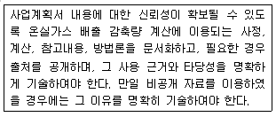
- 일관성
- 보수성
- 투명성
- 완전성
(정답률: 63%)
72. CO2 포집기술 중 연소 후 포집기술에 해당하는 화학적 흡수(습식흡수)법에 해당하지 않는 것은?
- 습식아민기술
- 암모니아기술
- 탄산칼륨기술
- 분리막기술
(정답률: 46%)
73. 이산화탄소 포집 및 저장에 대한 설명 중 CO2 저장 기술의 구분에 해당하지 않는 것은?
- 해양저장
- 대기저장
- 지표저장
- 지중저장
(정답률: 56%)
74. 온실가스 간접 감축방법에 해당하는 태양열 시스템의 주요 구성요소와 거리가 먼 것은?
- 단열부
- 축열부
- 이용부
- 집열부
(정답률: 49%)
75. 다음 설명에 해당하는 연료전지는?
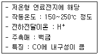
- 용융탄산염 연료전지(MCFC)
- 인산형 연료전지(PAFC)
- 고체산화물 연료전지(SOFC)
- 알칼리 연료전지(AFC)
(정답률: 50%)
76. 다음에서 설명하는 개념에 해당되는 용어로 가장 적합한 것은?
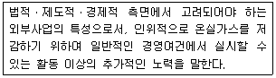
- 합목적성
- 전문성
- 추가성
- 공익성
(정답률: 63%)
77. 다음 온실가스 감축기술로 가장 거리가 먼 것은?
- 건물의 실내조명등을 백열등(60w)에서 LED등(12w)으로 교체함
- 인쇄기드라이어에서 발생되는 폐열을 회수하기 위하여 열교환기를 설치하여 보일러 설치없이 온수공급을 원활히 함
- 식당, 기숙사, 복도 등에 설치되어 있는 자판기에 타이머를 달아 영업시간 외에는 가동을 중지함
- 포장재로 종이가방을 제공하다가 비닐봉지로 대체
(정답률: 69%)
78. 온실가스 감축 이행계획 작성 및 이행관련에 관한 설명으로 옳지 않은 것은?
- 온실가스 감축 이행계획에는 배출시설의 현황과 배출량 산정을 위한 활동도를 계량하는 계측정보를 관리할 수 있어야 한다.
- 조직경계의 변경 및 배출시설 변경사항 및 계획에 관해서는 즉시 보고가 가능해야 하고, 실제 관리조직과 연계하여 업무를 배정하도록 하며, 조직개편 등에 의해 사업장 및 배출시설이 사업장 간에 이동되어야 하므로 지역별로 별도의 관리는 요구되지 않는다.
- 공정도 및 모니터링 포인트는 조직의 주요 활동을 중심으로 온실가스 배출량 및 에너지 사용량 보고에 활용이 되는 주요 공정 및 모니터링 포인트를 병기할 수 있어야 한다.
- 배출시설별 감축 이행계획은 배출시설별 적용 가능한 감축 아이템을 선정하고, 감축효과 및 절감액, 투자계획 등을 수립해야 한다.
(정답률: 61%)
79. 다음 중 CDM사업을 위한 모니터링 시스템 구축 내용에 관한 설명으로 옳지 않은 것은?
- CDM사업의 최종목표는 CER을 발금받는 것으로 모니터링은 CDM사업에 있어서 매우 중요한 과정으로 평가받고 있다.
- 모니터링 시스템의 신뢰성을 높이기 위해서는 계측기관리, 절차서, 기록관리 정차서, 검사 및 시험 절차서, 교육 및 훈련 절차서, 문서관리 절차서, 시정 및 예방조치 절차서 등을 구축할 것을 검토하여야 한다.
- CDM사업의 모니터링 계획 검증을 성공적으로 수행하기 위해서는 등록된 PDD에 대한 정확한 이해가 필요하며, CDM사업 등록을 추진하는 조직과 모니터링을 담당하는 조직이 서로 다른 경우 등록된 PDD에 대한 내용을 담당 부서에게 명확하게 전달 및 교육을 하여야 한다.
- 계측되는 모니터링 데이터나 방법론이 PDD에 규정한 모니터링 인자의 단위와는 일부 일치하지 않을 수 있으므로 모든 데이터 단위 명시를 하지 않는 것이 일반적이다.
(정답률: 57%)
80. 다른 발전과 비교하여 태양광 발전의 일반적인 특징으로 가장 거리가 먼 것은?
- 시스템이 단순하고 유지 보수가 용이한 편
- 수명이 긴 편
- 에너지 밀도가 높음
- 교류로 변환하는 과정에서 고조파가 발생
(정답률: 56%)
5과목: 온실가스관련 법규
81. 다음은 저탄소 녹생성장 기본법상 기후변화대응 기본계획 수립에 관한 사항이다. ()안에 알맞은 기간은?
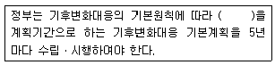
- 5년
- 10년
- 15년
- 20년
(정답률: 66%)
82. 저탄소 녹색성장 기본법 시행령에 따르면 대통령령으로 정하는 기준량 이상의 온실가스 배출업체 및 에너지 소비업체별로 측정ㆍ보고ㆍ검증이 가능한 방식으로 온실가스ㆍ에너지목표를 설정ㆍ관리하여야 하는데, 이에 따른 목표 관리에 관하여 총괄ㆍ조정 기능을 수행하는 자는?
- 국토교통부장관
- 환경부장관
- 기획재정부장관
- 산업통상자원부장관
(정답률: 52%)
83. 온실가스ㆍ에너지 목표관리 운영 등에 관한 지침상 2014년 1월 1일부터 적용되는 관리업체(사업장) 지정 에너지 소비량 기준으로 옳은 것은?
- 70 terajoules 이상
- 80 terajoules 이상
- 90 terajoules 이상
- 1000 terajoules 이상
(정답률: 55%)
84. 저탄소 녹생성장 기본법상 저탄소 녹생성장 추진의 기본원칙에 해당하지 않는 것은?
- 정부는 시장기능을 최대한 활성화하여 정부가 주도하는 저탄소 녹색성장을 추진한다.
- 정부는 녹색기술과 녹색 산업을 경제성장의 핵심 동력으로 삼고 새로운 일자리를 창출ㆍ확대할 수 있는 새로운 경제체제를 구축한다.
- 정부는 사회ㆍ경제 황동에서 에너지와 자원이용의 효율성을 높이고 자원순환을 촉진한다.
- 정부는 국가의 자원을 효율적으로 사용하기 위하여 성장잠재력과 경쟁력이 높은 녹색기술 및 녹색산업분야에 대한 중점투자 및 지원을 강화한다.
(정답률: 35%)
85. 온실가스ㆍ에너지 목표관리 운영 등에 관한 지침상 연료별 국가 고유 발열량에 관한 설명으로 옳지 않은 것은?
- 1cal은 4.1868J에 해당한다.
- 총발열량은 연료의 연소과정에서 발생하는 수증기의 잠열을 포함한다.
- 온실가스 배출량 산정 시 총발열량을 사용한다.
- Nm3은 0℃, 1기압 상태의 단위체적 (세제곱미터)을 말한다.
(정답률: 59%)
86. 온실가스 배출권의 할당 및 거래에 관한 법률상 주무관청은 매 계획기간 시작 몇 개월 전까지 배출권 할당 대상업체를 지정ㆍ고시하여야 하는가?
- 1개월
- 3개월
- 5개월
- 6개월
(정답률: 36%)
87. 온실가스 배출권의 할당 및 거래에 관한 법률상 할당대상업체는 인증받은 온실가스 배출량에 상응하는 배출권(종료된 이행연도의 배출권)을 주무관청에 이행연도 종료일부터 몇 개월 이내에 제출하여야 하는가?
- 3개월 이내에
- 6개월 이내에
- 9개월 이내에
- 12개월 이내에
(정답률: 47%)
88. 온실가스ㆍ에너지 목표관리 운영 등에 관한 지침상 목표관리를 위한 기준연도 배출량등에 관한 설명으로 옳은 것은?
- 목표관리를 위한 기준연도는 관리업체가 최초로 지정된 연도의 직전 5개년으로 하며, 이 기간의 연평균 온실가스 배출량을 기준연도 배출량으로 한다.
- 기준연도 기간 중 신ㆍ증설이 발생한 경우 해당 신ㆍ증설 시설의 기준연도 배출량은 최근 2개년 평균 또는 단년도 배출량으로 정할 수 있다.
- 관리업체는 합병ㆍ분할 또는 영업ㆍ자산도 양수 등 권리와 의무의 승계 사유가 발생된 경우, 변경사유 발생 후 90일 이내에 제3자 검증이 완료되어, 수정된 명세서를 부문별 관장기관에게 제출하여야 한다.
- 환경부 장관은 기준연도 배출량이 재산정된 경우 변경사유 접수 60일 이내에 배출허용량 등 목표를 수정하여 관리업체 및 센터에 통보하여야 한다.
(정답률: 30%)
89. 저탄소 녹색성장 기본법에 따른 녹색성장위원회의 구성 및 운영에 관한 설명으로 가장 적합한 것은?
- 위원장은 대통령 정책실장이 지명하는 사람이 된다.
- 위원의 임기는 3년으로 하되, 연임할 수 있다.
- 위원장 1명을 포함한 25명 이내의 위원으로 구성한다.
- 위원회의 사무를 처리하게 하기 위해 위원회에 간사위원 1명을 두며, 간사위원의 지명에 관한 사항은 대통령령으로 정한다.
(정답률: 45%)
90. 온실가스 배출권의 할당 및 거래에 관한 법률 시행령상 환경부장관은 권한 일부를 다른기관(또는 장)에게 위임하거나 위탁할 수 있는데, 이와 관련하여 “배출권등록부 및 상세 등록부의 관리ㆍ운영에 관한 사항”의 권한을 갖고 있는 것은?
- 한국에너지관리공단 이사장
- 한국환경공단
- 온실가스 종합정보센터장
- 국무조정실장
(정답률: 49%)
91. 다음은 온실가스 배출권의 할당 및 거래에 관한 법률상 배출권의 할당에 관한 사항이다. ()안에 알맞은 것은?
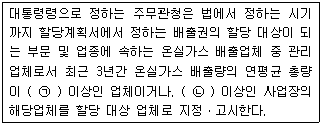
- ㉠80,000 tCO2-eq ㉡15,000 tCO2
- ㉠87,500 tCO2-eq ㉡20,000 tCO2
- ㉠125,000 tCO2-eq ㉡20,000 tCO2
- ㉠125,000 tCO2-eq ㉡25,000 tCO2
(정답률: 60%)
92. 저탄소 녹색성장 기본법에 따른 “수행 주체별” 책무로서 가장 적절하지 않은 것은?
- 국가는 각종 정책을 수립할 때 경제와 환경의 조화로운 발전 c 기후변화에 미치는 영향등을 종합적으로 고려하여야 한다.
- 지방자치단체는 저탄소 녹색성장대책을 수립ㆍ시행할 때 해당 지방자치단체의 지역적 특성과 여건을 고려하여야 한다.
- 사업자는 기업의 녹색경영에 관심을 기울이고 녹색제품의 소비 및 서비스 이용을 증대함으로써 기업의 녹색 경영을 촉진한다.
- 국민은 가정과 학교 및 직장 등에서 녹색생활을 적극 실천하여야 한다.
(정답률: 42%)
93. 신에너지 및 재생에너지 개발ㆍ이용ㆍ보급 촉진법 시행령 상 바이오에너지 등의 기준 및 범위에서 바이오에너지에 해당하는 범위로 거리가 먼 것은?
- 생물유기체를 변환시킨 바이오가스, 바이오에탄올, 바이오 액화류 및 합성가스
- 동물ㆍ식물의 유지를 변환시킨 바이오디젤
- 쓰레기 매립장의 유기성 폐기물을 변환시킨 매립지 가스
- 해수 표층의 열을 변환시켜 얻은 에너지
(정답률: 64%)
94. 온실가스 배출권의 할당 및 거래에 관한 법률에 따른 각 용어 정의로 옳지 않은 것은?
- “1 이산화탄소상당량톤”이란 이상화탄소 1톤 또는 기타 온실가스의 지구온난화 영향이 이산화탄소 1톤에 상당하는 양을 말한다.
- “배출권”이란 온실가스 감축 목표를 달성하기 위하여 지역 배출권 할당계획에 의거하여 설정된 온실가스 배출허용총량을 말한다.
- “계획기간”이라는 국가온실가스감축목표를 달성하기 위하여 5년 단위로 온실가스 배출업체에 배출권을 할당하고 그 이행실적을 관리하기 위하여 설정되는 기간을 말한다.
- “이행연도”란 계획기간별 국가온실가스 감출목표를 달성하기 위하여 1년 단위로 온실가스 배출업체에 배출권을 할당하고 그 이행실적을 관리하기 위하여 설정되는 계획기간 내의 각 연도를 말한다.
(정답률: 40%)
95. 온실가스ㆍ에너지 목표관리 운영 등에 관한 지침상 부문별 관장기관은 환경부장관의 확인을 거쳐 매년 언제까지 소관 관리업체를 관보에 고시하여야 하는가?(오류 신고가 접수된 문제입니다. 반드시 정답과 해설을 확인하시기 바랍니다.)
- 매년 1월 31일
- 매년 3월 31일
- 매년 6월 31일
- 매년 12월 31일
(정답률: 41%)
96. 신에너지 및 재생에너지 개발ㆍ이용ㆍ보급 촉진법상에서 정한 “재생에너지”에 해당하지 않는 것은?
- 수소에너지
- 태양에너지
- 풍력
- 지열에너지
(정답률: 73%)
97. 온실가스ㆍ에너지 목표관리 운영 등에 관한 지침상 배출시설의 배출량에 따른 시설규모 분류 중 A그룹에 해당하는 시설규모 분류기준은?
- 연간 5만 톤 미만의 배출시설
- 연간 15만 톤 이상의 배출시설
- 연간 5만 톤 이상, 연간 50만톤 미만의 배출시설
- 연간 50만 톤 이상의 배출시설
(정답률: 65%)
98. 저탄소 녹색성장 기본법상 정부가 자원 순화ㅤㅑㄴ의 촉진과 자원생산성 제고를 위하여 수립ㆍ시행하는 시책에 포함되어야 하는 사항과 가장 거리가 먼 것은?
- 자원의 수급 및 관리
- 환경기술 전문인력의 양성 및 지원
- 폐기물 발생의 억제 및 재제조ㆍ재활용 등 재자원화
- 에너지자원으로 이용되는 목재, 식물, 농산물 등 바이오매스의 수집ㆍ활용
(정답률: 50%)
99. 온실가스ㆍ에너지 목표관리 운영 등에 관한 지침상 관리업체의 부문별 관장기관 구분 중 산업ㆍ발전 분야의 관장기관은?
- 산업통상자원부
- 환경부
- 국토교통부
- 기획재정부
(정답률: 62%)
100. 온실가스 배출권의 할당 및 거래에 관한 법률상 할당대상업체는 해당 이행연도의 실제 온실가스 배출량에 관한 명세서를 주무관청에게 보고하여야 하는데, 매 이행연도 종료일부터 몇 개월 이내에 보고하여야 하는가?
- 1개월 이내에
- 3개월 이내에
- 6개월 이내에
- 12개월 이내에
(정답률: 44%)